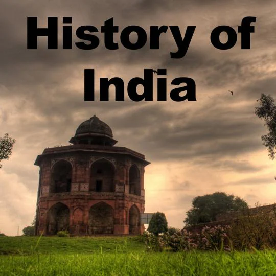
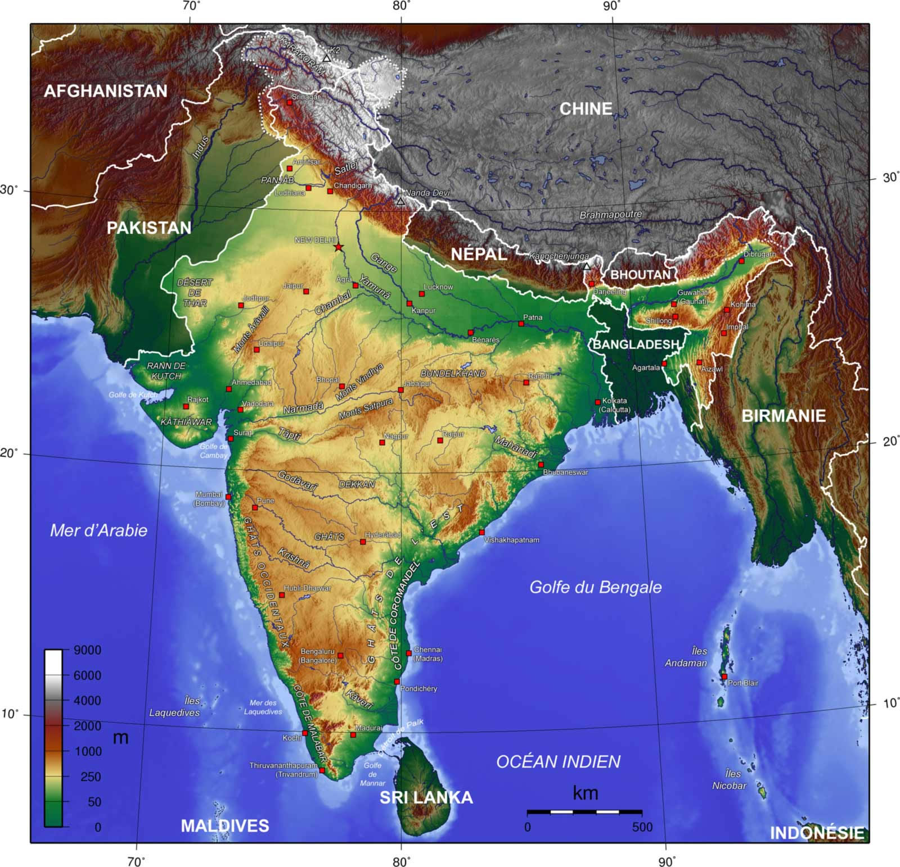

| 
History of India
According to consensus in modern genetics, anatomically modern humans first
arrived on the Indian subcontinent from Africa between 73,000 and 55,000
years ago.[1] However, the earliest known human remains in South Asia date
to 30,000 years ago. Sedentariness, which involves the transition from for
aging to farming and pastoralism, began in South Asia around 7000 BCE. At
the site of Mehrgarh, presence can be documented, with evidence of
domestication of wheat and barley,Read More
|

Geography of india
India is situated north of the equator between 8°4' north (the mainland)
to 37°6' north latitude and 68°7' east to 97°25' east longitude.[2] It is
the seventh-largest country in with a total area of 3,287,263
square kilometres (1,269,219 sq mi).[3][4][5] India measures 3,214 km
(1,997 mi) from north to south and 2,933 km (1,822 mi) from east to west.
It has a land frontier of 15,200 km (9,445 mi) and a coastline of 7,516.6 km (4,671 mi).[1]
On the south, India projects into and is Read More
|
.jfif)
Food of India
Indian cuisine consists of a variety of regional and traditional cuisines native to India. Given the diversity in soil, climate,
culture, ethnic groups, and occupations, these cuisines vary substantially
and use locally available spices, herbs, vegetables, and fruits.
Indian food is also heavily influenced by religion, in particular
Hinduism and Islam, cultural choices and traditions.[1][2]
Historical events such as invasions
Read More
|
.jfif)
Monuments of india
From Wikipedia, the free encyclopedia
This is a list of Monuments of National Importance (ASI) as officially
recognized by and available through the website of the Archaeological
Survey of India in the Indian state Bihar.[1] The monument identifier is
a combination of the abbreviation of the subdivision of the list (state,
ASI circle) and the numbering as published on the website of the ASI. 70
Monuments of National Importance have been recognized by the ASI
Read More
|
.jfif)
Market of india
The free encyclopedia
This is a list of Monuments of National Importance (ASI) as officially
recognized by and available through the website of the Archaeological
Survey of India in the Indian state Bihar.[1] The monument identifier is
a combination of the abbreviation of the subdivision of the list (state,
ASI circle) and the numbering as published on the website of the ASI. 70
Monuments of National Importance have been recognized by the ASI in Bihar
Read More
|
.jfif )
Education of india
From Wikipedia, the free encyclopedia
This is a list of Monuments of National Importance (ASI) as officially
recognized by and available through the website of the Archaeological
Survey of India in the Indian state Bihar.[1] The monument identifier is
a combination of the abbreviation of the subdivision of the list (state,
ASI circle) and the numbering as published on the website of the ASI. 70
Monuments of National Importance have been recognized by the ASI in Bihar
Read More
|